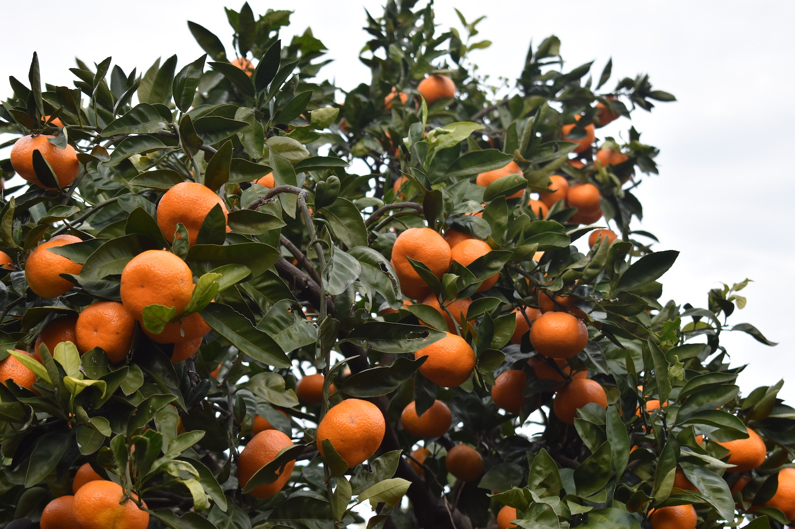

下中玉ねぎとは？
下中玉ねぎは、Agrlienの畑がある神奈川県小田原市の下中地区で生産されている玉ねぎです。下中地区を中心として小田原で生産される玉ねぎは「かながわブランド」にも登録されています。辛味が少ないのが特徴の玉ねぎで、サラダでも、炒めても美味しく召し上がっていただけます。玉ねぎというと淡路や佐賀の玉ねぎが有名かと思いますが、東京・横浜のすぐそばの小田原にも美味しい玉ねぎがあることを知ってもらおうと、生産と販売という形で応援しています。
Agrlienと下中玉ねぎ
Agrlienは、地元農家の秋澤さんのご指導と禅龍寺ご住職の平本さんのご協力の元で、玉ねぎの栽培を初めて今年で４年目になります。毎年11~12月に玉ねぎの苗を定植し、雑草管理などを行いながら、5月に収穫を迎えます。多くの人に下中玉ねぎの美味しさを知ってもらおうと、今年もオンラインでの販売に注力しています。新玉ねぎは長期間の販売ができませんので、気になる方はお早めにご購入をお願いします！
お世話になっている小田原の方々
秋澤隆史さん
小田原で300年以上みかんの栽培を続けている「あきさわ園」の農家さんです。下中玉ねぎの栽培方法に関して手厚い指導やサポートをしていただいています。
あきさわ園のHPはこちら
平本祥啓さん
畑を貸していただいている禅龍寺・東際寺の住職さんです。お寺の魅了やお寺を通じた人との繋がりを一層広めるために、小田原を中心にイベントの企画などを行っています。
詳しくは＜禅龍寺HP＞または＜東際寺HP＞へ
サポーター制度
東京大学Agrlienは、社会人サポーターを募集しています。ご支援いただいた皆様には、農産物や収穫体験をご提供します。募集詳細は以下の通りです。
支援金額 30,000円
特典①
かながわブランド「下中玉ねぎ」30kg
特典②
下中玉ねぎの植え付け・収穫体験（秋・春）
特典③
四季の収穫体験（筍堀り・ブルーベリー狩り・イモ掘り・みかん狩り）

支援金額 50,000円
特典①
かながわブランド「下中玉ねぎ」50kg
特典②
下中玉ねぎの植え付け・収穫体験（秋・春）
特典③
四季の収穫体験（筍堀り・ブルーベリー狩り・イモ掘り・みかん狩り）

ご興味のある方は、下記メールアドレスにお問い合わせください。
yayoi.dining@gmail.com